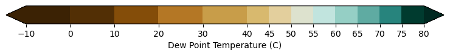
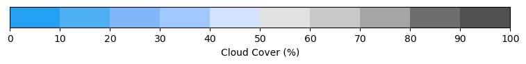
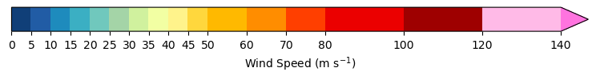

Utilities¶
NWS Standard Color Curves¶
Standardized colormaps from National Weather Service
Source: Joseph Moore <joseph.moore@noaa.gov>
Document: ./NWS Standard Color Curve Summary.pdf
Returns dictionaries with kwargs used to assign a matplolib plots colormap and the colorbar labels.
For example:
import matplotlib.pyplot as plt
import numpy as np
from hrrrb.utils.cmap.standard import cm_tmp
cm_cmap, cm_colorbar = cm_tmp()
plt.pcolormesh(np.random.rand(8,8)*35, **cm_cmap)
cb = plt.colorbar(**cm_colorbar)
Functions:
|
Colormap for dew point temperature in Celsius. |
|
Colormap for precipication (mm). |
|
Colormap for relative humidity as a percentage (0-100 %). |
|
Colormap for sky/cloud cover (%). |
|
Colormap for temperature in Celsius. |
|
Colormap for wind speed (m/s). |
-
utils.cmap.standard.cm_dpt(display_cmap=False)¶ Colormap for dew point temperature in Celsius.
- Parameters
display_cmap (bool) – If True, show just the cmap
-
utils.cmap.standard.cm_precip(display_cmap=False, units='mm')¶ Colormap for precipication (mm).

- Parameters
display_cmap (bool) – If True, show just the cmap
units ({'mm', 'inches'}) – Specify units. Default is millimeters, but you might want to show your graph in inches.
-
utils.cmap.standard.cm_rh(display_cmap=False)¶ Colormap for relative humidity as a percentage (0-100 %).

- Parameters
display_cmap (bool) – If True, show just the cmap
-
utils.cmap.standard.cm_sky(display_cmap=False)¶ Colormap for sky/cloud cover (%).
- Parameters
display_cmap (bool) – If True, show just the cmap
-
utils.cmap.standard.cm_tmp(display_cmap=False, levels=40)¶ Colormap for temperature in Celsius.

- Parameters
display_cmap (bool) – If True, show just the cmap
levels (int or None) – Number of discreate color levels. If None, cmap is continuous.
-
utils.cmap.standard.cm_wind(display_cmap=False)¶ Colormap for wind speed (m/s).
- Parameters
display_cmap (bool) – If True, show just the cmap